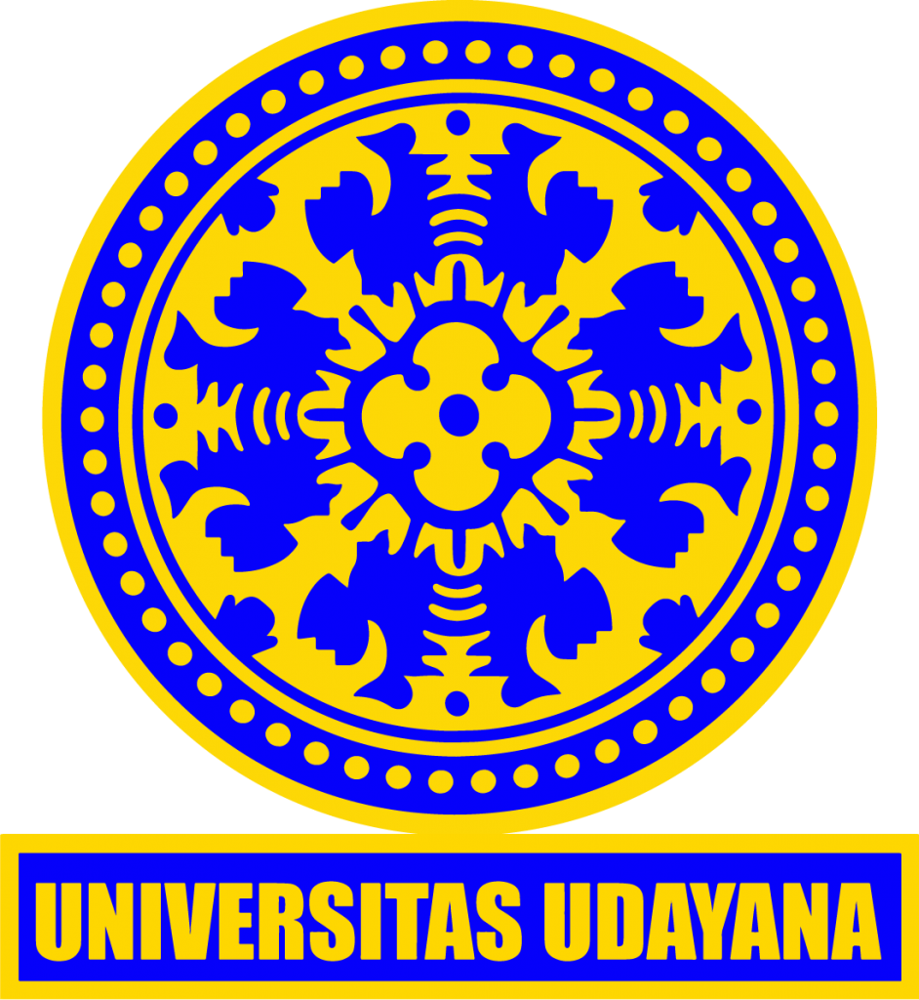

Undergraduate Information Technology student with strong interest in data analysis and business-driven insights. Experienced in exploratory data analysis, data preprocessing, and building analytical projects using Python and SQL. Comfortable working with real-world datasets and communicating findings clearly through reports and visualizations.

2025 - Present
Information Technology
2022 - 2025
Software Engineering (RPL)